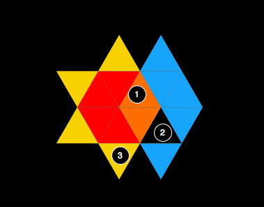

In an earlier post I was trying to describe a way to use coordinates on triangular grids. In the end I decided to go with a simple three lane coordinate system that allows easy calculations based on graph theory.
The basic Birom rules are based on encirclement detection. The three following cases are all implemented as Breadth-first search with different parameters for neighbour detection and exit conditions.

When a player encloses an vacant area, the captured area is being marked with point stones for the corresponding player.
When a player fully encircles one or more opponent's stones, the stones get captured by the opponent. They can than be re-used later as additional stones. (There has been extensive discussions about this topic partially covered in Birom Dilemma I.. In this implementation, stones are captured, even though they are only encircled by common ground)
This rule checks, weather a player has managed to fully encircle the central red Birom. The first player achieving that, wins the game. If both players encircle the red Birom during the same turn, the game ends in a draw.
This example is based on triangles only. The same rules as in birom are applied. Click to add a triangle. The triangle must be connected to the existing stones with at least one corner.
For the reason that a Birom is nothing more than a collection of triangles, the same algorithms can be used for the real Birom game implementation. Focus is more and more shifting towards client implementation, game persistency and other back-end related stuff. There may be a post about our CoffeeScript, node.js and mongoDB setup soon.